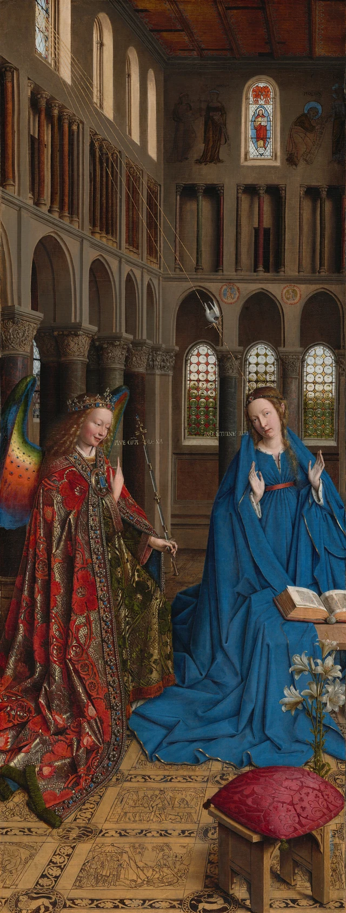
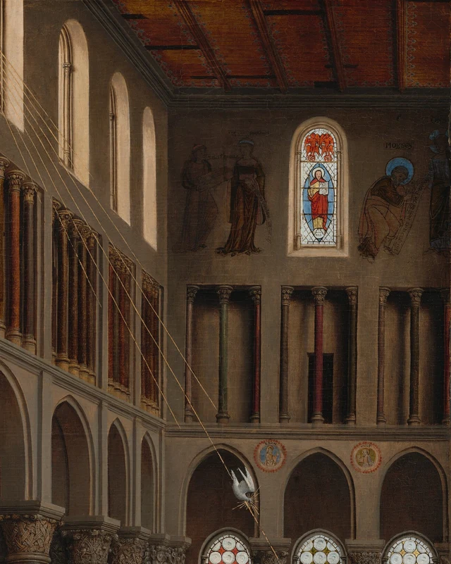

两个人之间，有两行很小的金字。
左边一行从天使嘴边伸向右方。右边一行靠着蓝衣女子的脸，却倒了过来。我们顺着第一行移动目光，到了第二行，原来的读法突然不顺手了。先别急着把它转正。画中连一颗珠子、一本书的厚度都交代得如此认真，这几枚字母的方向，值得我们同样认真地看。

本文提出的读法是：这幅画让神圣的消息进入极其具体的物质世界，同时用两行字的不同朝向，提醒观看者，眼前的世界还有一个并非由我们占据的位置。它画得如此真切，却没有把一切都安排成方便我们读取的样子。
题材来自《路加福音》：天使加百列向玛利亚宣告，她将生下耶稣；她询问此事如何发生，随后作出回应。福音把相遇置于拿撒勒，没有描写眼前这座教堂、华贵衣袍或打开的书。凡艾克生活在十五世纪的尼德兰，服务于勃艮第宫廷，也为其他委托人作画。这里的材质、服饰与建筑，把一段古老叙事带进了他所熟悉的视觉世界；这些增添的细节，又把一次相遇展开为关于降生与救赎的图像。经文背景；作品及画家资料
一 话已经说出，听者却不止一个
天使的问候在画上缩写为“AVE GRA PLENA”，大意是向蒙受恩宠的玛利亚致意。她的回答是“ECCE ANCILLA DNI”，意为“看，我是主的使女”。两句都不是写在书页或卷轴上的文字。它们悬在人物之间，没有支架，也没有替声音画出的边框。

按这幅画的传统宗教解读，倒置的答语是写给上方的上帝阅读的。铭文与图像解释 这个解释重要，因为它改变了“谁在听”的答案：玛利亚正在回应面前的天使，她的话也朝向神。观众可以读懂意思，却得先承认，自己的阅读方向不是这里唯一的方向。
这种差别已经出现在脸与手之间。加百列略向她倾身，嘴唇分开，面颊有温暖的红。他抬起右手，食指向上，另一只手握住细长的杖。玛利亚的两手张开，手指分离，一只更靠近身体，另一只举向画面右缘。天使的动作有一个明确的指向，她的回应则在身体两旁展开。
她的脸转向我们这一侧，目光没有直直迎住加百列的眼睛。这个轻微的错开，使相遇保留着一种开放状态：我们看得到交谈，交谈却没有被两人互看的视线封闭起来。向上的手指、倒置的字与更高处的光，让两人之间的空间继续向上延伸。
也因此，不妨晚一点替她的表情命名。惊讶、顺服、沉思，都可能成为观看中的词语；画上先给出的，是略倾的头、张开的手和微启的嘴。她的回答有文字，我们不必再让一张脸独自承担整段神学。
二 人物上方为什么还留着这么高的地方
顺着天使的手指往上看，会发现人物只占据这座建筑的下部。柱头上面还有拱廊，拱廊上面还有小柱与窗，最后才到木质天花。画幅宽度只有高度的三分之一多一点，视线每往上走一段，都会更强地感到它的狭长。
如果只想画出两个人相遇，头顶不必留这么大的地方。这里的高度让另一条路径变得可见：细细的金线从左上方斜落，穿过大段建筑空间，在玛利亚上方与一只白鸽相遇。长线与小小的白色羽翼，连起了远处的入口和近处的人。

在基督教图像传统中，鸽子指向圣灵，七道光关联圣灵的恩赐。这里的金线有清楚的边界，像能够追踪的路线；柱面与脸上的明暗却渐渐过渡，让我们感觉石头圆转、皮肤柔软。两种光的画法处在一起：一种说明照明如何显出物体，另一种让神学意义上的到来获得方向。
高处的小窗也值得慢看。窗中红衣人物被蓝色包围，尺寸远小于下面两个人；小窗两侧是暗淡的壁画。往下，玛利亚身后的窗格则由一圈圈玻璃组成，白、黄、绿与红在圆片间交错。建筑上部的圆拱与下部的尖拱，也使我们在视觉上经历不同形式。
研究常把这些差别放进旧约与新约、律法与恩典的基督教解释中。这样的读法有历史根据，但不需要把建筑说成一份绝不可能建成的设计图。这是画家组织的教堂空间，某些形式也能在真实建筑中找到近例。建筑与图像研究
更直接的经验是：我们在这里不能只盯着一个尺度。脸与手让人靠近，高窗和壁画又要求抬头、退开。小小的神像被放在那么高的地方，其视觉力量来自位置与距离，不靠体积压过人物。整座建筑把“在上方”变成了观看时必须经历的一段路。
三 华丽的衣服，宽阔的蓝
再往下，眼睛会遇到完全不同的密度。
天使的衣袍里几乎没有一大片空白。红色花纹翻卷，金色枝叶彼此缠绕，衣缘排列着珠子与蓝、红色的宝石。图案随褶皱弯下去，一部分在暗处消失，另一部分重新翻向亮处。华丽并不是平贴上去的装饰；它随着身体转折，有重量，也有厚度。
旁边的蓝色却铺得很开。玛利亚的袍子从肩头落下来，在腰间收拢，然后沿着膝下和地面扩展。深蓝的沟槽夹在较亮的折面之间，靠近下缘，细金边随着布料起伏，有些地方翻起，有些地方平贴。我们很难从宽袍中还原她下半身的完整姿势，却很容易感到这些布在她周围占据了多少空间。

左边让目光一颗一颗地停，右边让目光沿着大块布面滑行。两者没有变成彼此隔绝的颜色岛：红金衣袍垂向左下，蓝袍越过玛利亚身体所在的位置，向左伸到天使近旁。两个人没有触碰，衣物已经在下方接近。上面的对话是轻的，下面的相遇有宽广而沉重的布料托着。
打开的书从蓝色前面显出来，暖褐色的书口一层层叠起。书页很薄，整本书却厚；翻开的两侧不完全一样，细小字迹沿着页面排开。这个物件为阅读提供了一个熟悉的支撑。回想两人面前悬空的金字，差别就显出来了：同一幅画里，有依附书页的文字，也有越过书页、进入空间的话语。
百合又把蓝袍划开几道更轻的曲线。花瓣并非一律纯白，朝向不同的瓣面带着灰影，花心和细茎另有微小的色差。它在圣母图像中有纯洁的含义；但若只把“百合等于纯洁”记进心里，我们便可能错过花瓣怎样卷起、枝茎怎样穿过蓝色。象征在这里长着具体的样子。
凡艾克的油画让金属、玻璃、织物、书页与肌肤分别显出触感。细看越可靠，那些没有日常物理支撑的金字与金光便越突出。画面的真切容纳着这种差异：石头可以让我们想象伸手触摸，话语却要求我们想到触摸以外的关系。
四 地面让这次相遇有了更长的时间
人物脚下看似只是花纹繁密的地面。稍微俯下目光，便会看见小小的身体、兵器、建筑和倒地的人。它们是画中更小的图像，与头顶的壁画遥相呼应。
前方中央一格描绘大卫斩下歌利亚的头；再上一格，是参孙推倒神庙。故事的辨认需要文字与研究帮助，但动作的强度很容易与上方人物比较：地砖里有举起的武器、倒下的身体和受到破坏的建筑；地砖上方，只有两只张开的手与一个指向上方的手指。地面故事及传统解释

为什么报喜的喜讯旁边会有暴力？中世纪基督教的预表解经，会把旧约人物与事件理解为基督故事的先兆。在这种读法中，大卫的胜利关联基督战胜邪恶，参孙推倒神庙时的死亡则预示基督受难。这里是在说明一种历史上的信仰阅读方式；它使“将要出生”的消息同时朝向那个人未来的受难与复活。
我们看到的于是超过了一个相遇的瞬间。墙上的故事属于过去，人物在眼前说话，传统释义又把这些线索接向未来。画没有把所有事件排成连续的画格，而是把不同时刻分配给不同材质：远处墙面上的旧故事，近处彩色身体的当下，脚下近乎刻线的搏斗。时间通过空间和画法的差别，一层层进入视线。
然而，地面并没有敞开成一份完整图解。蓝袍盖住后面的格子，天使衣摆遮去左边的一角，红垫木凳又把右前方挡住一大块。那张垫子甚至比许多叙事更醒目：它红得浓，四角向外伸，流苏垂在木头边上。若我们急着逐格破解，眼前的布料和家具就会显得碍事。
本文更愿意把这些遮挡看成画面成立的一部分。故事属于人们所在的世界，因此也得承受身体和物件占住位置的事实。玛利亚的衣服既让她鲜明地来到眼前，也让一部分古老故事退到不可见处。知道图像有许多意义，不等于它们必须同时、完整地为观众展览。
五 回答没有朝我们转正
现在回到两行字。经过这座教堂之后，最初的阅读不便有了更多同伴：高处的小窗要抬眼寻找，地面的故事要俯视辨认，书中的细字与被衣服挡住的图案又各自保留着距离。画让我们看得很多，也不断改变我们看的位置。
这幅画本身也有一段漫长的历史。我们可以指出，这些关系怎样共同作用；但从一幅保存下来的画出发，尚不能把它原先全部的观看条件恢复出来。作品可能属于一个更大的组合，具体委托与早期出处仍有未定之处。它后来又从木板转移到画布。我们面对的是经过漫长流传来到今天的作品，而不是一扇从十五世纪原封未动留下的窗口。作品沿革与研究
这并不减少眼前关系的精确。天使说话，玛利亚回答；衣料向地面铺开，光从高处来到；旧故事围绕着一个正在发生的时刻。我们不必先解决每一块地砖和每一处出处争论，才能看见这些关系怎样相互支撑。
本文的判断是，凡艾克在这里给出的真切感，与观看者掌握一切的感觉并不相同。越能感觉书页、珠子和布的质地，越能发现这场相遇还有另一个方向：神圣并未躲到物质世界之外，而是通过它的具体形态被呈现；其中一些关系，却继续越出我们面前这个位置。
再看玛利亚那句倒置的答语。我们已经知道它在说什么，可以把它顺利译成自己的语言。但把眼睛还给画时，不妨仍让它保持原来的方向。读懂这句话之后，画还让我们看见，这句话朝向谁。
可选阅读 用SAE追问“读懂以后还看什么”
前面的导读已经可以独立成立。这里借SAE（Self-as-an-End）美学，再把观看中的两处经验打开：一句话的意义如何被读出，以及读出意义后，具体形态是否仍值得停留。SAE美学总论
先看那行倒置的金字。即使已经知道中文意思，细线般的字母仍旧倒着，仍贴近脸与窗之间那一小片空间。释义没有消除它的方向、间距和金色。SAE“感知之美”关注的，正是显现自身的样子：我们暂时不用它辨认或办事，它仍然如此显现。感知之美 在这幅画上，可以把解释先放在一旁，看看那些字怎样既轻得近乎消失，又足以截住顺畅的阅读。理论帮助我们留下这一层，不让“意思已经明白”过早结束观看。
再留意自己的阅读习惯。一个熟悉拉丁字母横排的人，或许还没逐字辨认，就已预期下一行也会顺着读来；倒置的答语使这个预期停住。旧经验并未写在画上，却先在观看者那里安排了将要发生的阅读。得知方向的宗教含义后，再遇到同一行字，那个预期也可能改变：这一次，我们会先寻找它的朝向。
这可沿着SAE“认知之美”继续看。它关注记着的经验怎样伸向尚未到来的东西，以及预期受阻时，原有经验如何被重新取用。认知之美 此处的落点在我们的观看过程：什么使字母一出现就像应当被读出的句子？为什么同样的笔画，第二次看会引出不同的等待？读者的文字经验各不相同，这个变化也可以由各自的实际观看来检验。
对我而言，这两条线最后相接在一个很具体的地方：译文替我们打开了话语的内容，画上的字形仍然保留着一次有方向的相遇。解释可以加深眼睛的经验，眼睛也可以让解释继续有所发现。下一次回看那几枚小字时，我们值得多停留一会儿。
图像与资料说明
视觉描述依据美国国家美术馆提供的1553×4096像素原图及四处局部观察。全图保持下载文件原样；图2至图5仅作裁切，未调色、补绘、修复或生成内容。数字复制品的颜色与尺度受显示条件影响。
馆方开放图像采用CC0政策。图像许可不涵盖现代研究文字。本文以独立看图与分析为主体，事实和传统释义链接馆藏记录、经文及学术目录；本文判断不代表馆方背书。1986年目录用来核对图像与研究史，不用其旧保存状况描写今天的画面。未获取全文的后续技术论文仅列为延伸阅读，没有据此补写制作工序。另见参考资料与图像来源及许可。